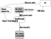

Run Micro-leads MUX to Switch Ripple Stimulation Channels
You only need a few functions in this MATLAB software package to send commands to ML MUX controller box, which in turn controls Micro-leads MUX ASIC embedded in the active cat paddle.

The goal is to be able to "switch" MUX ASIC so that Ripple stimulation currents can be routed to different electrodes in the active cat paddle for neural stimulation (see the system diagram above).
Contents
Connect the Hardware
Connect all the hardware according to the diagram above. Plug in the USB cable last. Because there is no power on/off button, you can plug/unplug the USB cable to power/un-power the ML MUX controller box. The USB isolator is to isolate (or "float") the ML MUX controller box from the connected PC power supply "ground".
A BLUE LED lights up when ML MUX controller box is powered up and finishes its internal check-up sequence. This may take several seconds after USB plug-in.
In case you haven't plugged in the DB9 MUX control cable, there is no electrical connection to ML active cat paddle or the breakout MUX tester, RED LED will start flashing.
RED LED flashing indicates a missing communication link between ML MUX controller box and the MUX ASIC. To establish or re-establish this link, you need to follow the steps below.
Open Serial Port
1. Find the USB Serial Port number from your "System/Device Manager" (for example COM89 in the screen shot below)

2. Open the serial port with YOUR serial port number (probably not COM89 in your case) and set baudrate = 9600; Now "ser" is the handle to that serial port that is used to communicate to the MUX controller box.
ser = serial("COM4", "BaudRate",9600) fopen(ser)
Initialize/Re-initalize MUX
To power up MUX ASIC properly, run "start_mux" function with the serial port #.
The RED LED flashing should be extinguished after calling this function
start_mux(ser)
The communication link between the MUX controller box and the MUX ASIC is constantly monitored. Whenever the link is broken, run this function immediately to re-establish the link.
MUX ASIC will NOT function when RED LED is flashing.
If the USB cable is unplugged and re-plugged, the "serial" port needs to be re-opened as well.
Assign Stimulation Channels
You select the list of electrodes from the paddle (see paddle electrode sites mapping) to be stimulated, as the input to "mux_assign" function.

The output "e" should match your input, indicating the assignment completed successfully.
The output "s" are the corresponding Ripple stimulation channels to be turned on for stimulation (see Ripple connector pinout mapping)

The output "p" are the command bytes to be sent to MUX controller box
[e,s,p] = mux_assign([1,8,0,9])
In the example above, the selected electrode sites are list [1,8,0,9]. The corresponding Ripple channels are list [3, 1, 9, 15]. Note: the order of these two lists indicates one-to-one relationship
Switch MUX
Once the assignment completes successfully, you can perform the experiment by following the last two steps:
1. send the command "p" to ML MUX Controller box to activate the switching
switch_mux(ser, p)
2. send stimulation to the corresponding Ripple channels, as the list in "s"
fprintf("Ripple ch%d <==> E%d \n", [s;e]) % NOTE: << add your Ripple commands to send stimulations on channels "s" >>